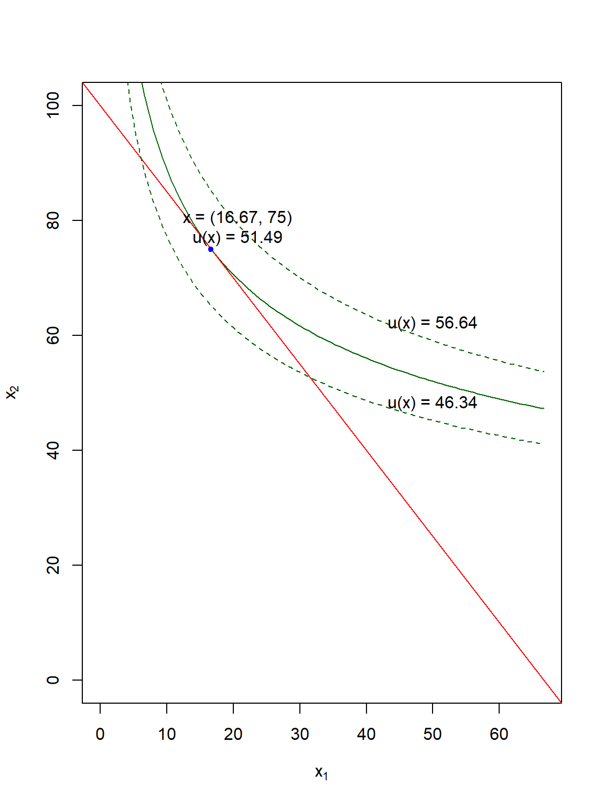

Rational Choice
Overview
A rational consumer chooses the most preferred bundle that lies within their budget constraint.
When we represent preferences with a utility function, that bundle maximizes utility subject to the budget constraint.
Solution methods:
- Graphical
- Analytical
- Computational
Example
The following example solves the utility maximization problem involving a two-good Cobb-Douglass utility function with \(\alpha = 0.25\), \(p_1 = 1.5\), \(p_2 = 1\), and \(m = 100\).
\[\max_x \bigg\{ U(x_1, x_2) = x_1^{0.25}x_2^{0.75} \bigg\}\] \[\text{s.t.: }1.5x_1+x_2 \le 100\]
Graphical Solution
The graphical solution shows the intuition for the equilibrium, which is:
- The consumer’s willingness to trade off \(x_1\) and \(x_2\) (the MRS, or slope of the indifference curve) equals the market’s willingness to trade off \(x_1\) and \(x_2\) (the relative price of good 1 to good 2, or the slope of the budget line); \[\frac{MU_1}{MU_2}=\frac{p_1}{p_2}\]
- The consumer exactly spends their budgeted income. \[p_1x_1 + p_2x_2 = m\]
Click here to view the code for the graph.
u <- function(x) { x[1] ^ (alpha) * x[2] ^ (1 - alpha)}
alpha = 0.25
p1 = 1.5
p2 = 1
m = 100
equilibrium <- constrOptim(
c(0.01, 0.01),
u,
NULL,
ui = c(-p1, -p2),
ci = c(-m),
control = list(fnscale = -1))
equilibrium$lambda <-
alpha * equilibrium$par[1] ^ (alpha - 1) * equilibrium$par[2] ^ (1 - alpha) / p1
curve(
equilibrium$value^(1 / (1 - alpha)) / (x^(alpha / (1 - alpha))),
0, m / p1,
xlab = expression(x[1]),
ylab = expression(x[2]),
xlim = c(0, m / p1),
ylim = c(0, m / p2),
col = 'dark green')
abline(m / p2,-p1 / p2, col = 'red')
points(equilibrium$par[1], equilibrium$par[2], col = 'blue', pch = 20)
curve(
(1.1*equilibrium$value)^(1 / (1 - alpha)) / (x^(alpha / (1 - alpha))),
0, m / p1,
xlab = expression(x[1]),
ylab = expression(x[2]),
xlim = c(0, m / p1),
ylim = c(0, m / p2),
col = 'dark green',
add = TRUE,
lty = 'dashed')
curve(
(0.9*equilibrium$value)^(1 / (1 - alpha)) / (x^(alpha / (1 - alpha))),
0, m / p1,
xlab = expression(x[1]),
ylab = expression(x[2]),
xlim = c(0, m / p1),
ylim = c(0, m / p2),
col = 'dark green',
add = TRUE,
lty = 'dashed')
text(equilibrium$par[1] + 4, equilibrium$par[2] + 4,
paste0('x = (', round(equilibrium$par[1], 2), ', ',
round(equilibrium$par[2], 2), ')\nu(x) = ', round(equilibrium$value, 2)))
text(50, (1.1*equilibrium$value)^(1 / (1 - alpha)) / (50^(alpha / (1 - alpha))) + 3,paste0('u(x) = ', round(1.1*equilibrium$value, 2)))text(50, (0.9*equilibrium$value)^(1 / (1 - alpha)) / (50^(alpha / (1 - alpha))) + 3,paste0('u(x) = ', round(0.9*equilibrium$value, 2)))

Analytical Solution - Setup
Five Key Steps
- Rearrange the constraint to be something equal to zero when it binds.
- Define the Lagrangean: add \(\lambda \cdot [constraint]\) to the objective function (remember, it’s zero when it binds, so you’re not really adding anything!).
- Take derivatives with respect to the choice variables (\(x_1\) and \(x_2\)) and \(\lambda\).
- Set the derivatives equal to zero.
- Solve the system of equations for \(x_1\), \(x_2\) and \(\lambda\).
The “Lagrangian” function for our example is:
\[\mathcal{L} = x_1^{0.25}x_2^{0.75} + \lambda (100 - 1.5x_1 - x_2)\]
For the constrained optimization problem given above, use the
deriv function to:
- Define a yac_symbol object for the Lagrangian;
- Find the derivatives with respect to \(x_1\), \(x_2\), and \(\lambda\);
Wrap the function obtaining the derivatives in “()” so that it displays in the output.
L <- ysym('x1^(0.25) * x2^(0.75) + lambda*(100 - 1.5*x1 - x2)')
(dL <- c(deriv(L, 'x1'), deriv(L, 'x2'), deriv(L, 'lambda')))First-Order Conditions
Setting the derivatives of the Lagrangean equal to zero finds the “first-order conditions.” These conditions find the “critical values” where the Lagrangean switches from increasing to decreasing (or vice-versa) corresponding to maximum (minimum) values.
\[0.25 x_{1} ^{-0.75} x_{2} ^{0.75} - 1.5 \lambda = 0 \text{ (w.r.t. good 1)}\] \[0.75 x_{1} ^{0.25} x_{2} ^{-0.25} - \lambda = 0 \text{ (w.r.t. good 2)}\] \[100 - 1.5 x_{1} - x_{2} = 0 \text{ (w.r.t. }\lambda)\]
The basic recipe:
- Solve the first-order conditions with respect to \(x_1\) and \(x_2\) for \(\lambda\).
- Combine these two conditions to form the MU-per dollar or MRS condition. \[\frac{MU_1}{p_1} = \frac{MU_2}{p_2} = \lambda \text{, or}\] Rearranging, this is equivalent to: \[MRS_{12} = \frac{MU_1}{MU_2} = \frac{p_1}{p_2}.\]
- Solve the MU/dollar or MRS condition and the budget constraint for \(x_2\).
- Combine these two equal expressions and solve for \(x_1^*\).
- Repeat 3 and 4 or substitute \(x_1^*\) to solve for \(x_2^*\)
- Substitute \(x_1^*\) and \(x_2^*\) in the first-order conditions to find \(\lambda\).
Analytical Approach - Equilibrium
The MRS Condition
Derive the \(MRS\) of the example with the following steps:
- Solve the first-order conditions with respect the \(x_1\) for \(\lambda\) using
solvefromRyacas. Pipe this forward toy_rmvars()to remove thelambda ==and multiply the result byp1. Name this objectMU1. - Convert the result to a string with
yac_strand cancel terms withSimplify(). Convert the result back to ayac_symbolwithysym. - Repeat 1 and 2 for the first-order condition with respect to \(x_2\) and name it
MU2. - Divide
MU1/MU2to get the MRS.
MU1 <- solve(dL[[1]], 'lambda') |>
y_rmvars()*p1
MU1 <- yac_str(MU1) |>
Simplify() |>
ysym()
MU2 <- solve(dL[[2]], 'lambda') |>
y_rmvars()*p2
MU2 <- yac_str(MU2) |>
Simplify() |>
ysym()
MRS <- MU1/MU2 \[MRS = \frac{x_{2}}{3. x_{1}} = \frac{p_1}{p_2}\]
Solving for Consumption
Solve for the optimal \(x_1^*\) and \(x_2^*\).
- Solve the \(MRS\) condition,
MRS - p1/p2 = 0, for \(x_2\).
Remove thex2==usingy_rmvarsand name thisMUpsolve1. - Solve the budget constraint,
dL[[3]]for \(x_2\) and removex2==. Name thisBCsolve1. - Combine the result of 1 and 2 by solving
MRSsolve1 - BCsolve1 = 0for \(x_1^*\). Name the resultx1star, applyy_rmvars(). <br? Convert the resulting numerical answer to anRexpression object and evaluate to convert the result to a simple numeric object. - Remove the LHS variables, convert to an expression, and evaluate the result to get a numerical answer.
Repeat for \(x_2\)
MRSsolve1 <- solve(MRS - p1/p2, 'x2') |>
y_rmvars()
BCsolve1 <- solve(dL[[3]], 'x2') |>
y_rmvars()
x1star <- solve(MRSsolve1 - BCsolve1, 'x1') |>
y_rmvars() |>
yac_expr() |>
eval()
MRSsolve2 <- solve(MRS - p1/p2, 'x1') |>
y_rmvars()
BCsolve2 <- solve(dL[[3]], 'x1') |>
y_rmvars()
x2star <- solve(MRSsolve2 - BCsolve2, 'x2') |>
y_rmvars() |>
yac_expr() |>
eval()A trick to get \(x_2^*\) in one line
involves manipulating the strings using gsub() and
parse() (which we will do to find \(\lambda\) next).
x2star <- parse(text = gsub('x1', x1star, BCsolve1)) |>
eval()Solving for \(\lambda\)
- Substitute
x1starforx1andx2starforx2in the \(MU\p\) condition with respect to \(x_2\) (or \(x_1\)) using the nestedgsubfunctions for making string substitutions.
Sadly, piping doesn’t work withgsub. - Nest (1) within
parse(text = ...). Again, piping won’t work. - Pass the result to
eval()to evaluate the calculations.
lambda <-
parse(text = gsub('x2', x2star, gsub('x1', x1star, MU1/p1))) |>
eval()If you print the solution for all three choice variables, it will look like this:
16.6666667, 75, 0.5149418`
Computational Solution
Not gonna lie: part of the point of going through the solution analytically was to show you what a pain in the tuchus it can be! (It’s not necessarily better doing it on pencil-and-paper “by hand” either!)
Now, we’ll set that aside and let the computer crunch the numbers. One downside of this is that we’ll lose some of the intuition of the expressions we derived in the analytic solution.
Setup
Set up the solution by defining the following
- A utility function,
uxdefined as afunction(x)object wherex = c(x[1], x[2]).
Note: most optimization functions find the function minimum by default. Some have an option that switches from minimization to maximization;solnpdoes not, so we will minimize the negation of the utility function (i.e. put a “-” sign in front). - The budget constraint,
bcdefined similarly toux. - The parameters
alpha,p1,p2, andmusing the numerical values from the example.
ux <- function(x) {
- x[1] ^ (alpha) * x[2] ^ (1 - alpha)
}
bc <- function(x) {
p1 * x[1] + p2 * x[2]
}
alpha = 0.25
p1 = 1.5
p2 = 1
m = 100Solution
Once we’ve defined these values, the solution for the optimal
consumption bundle involves a single function, constrOptim,
that doesn’t even require installing a separate package! The arguments
for this function are (in order):
pars: the starting values (an initial “guess”) for \(x\) (which must be positive - and usually small - for economically-sensible answers);fun: the objective function (the utility function,ux);ineqfun,ineqLB, andineqUB: the constraint inequality function (linear expenditure function), lower bound (zero), and upper bound (income), respectively.Solve our problem using the previous setup values using
solnp()and name this objectequilibrium.Print the values of consumption (
pars), the Lagrange multiplier (lagrange), and the final value of utility at the equilibrium (the last element of (values).
Hint: you can extract the last element of a vector using thetail(v, 1)function.
equilibrium <- solnp(
c(1, 1),
ux,
ineqfun = bc,
ineqLB = 0,
ineqUB = m,
LB = c(0, 0),
UB = c(Inf, Inf)
)
equilibrium$pars
-equilibrium$lagrange
-tail(equilibrium$values, 1)Note that the intuition from the analytical solution tells us that the “true” answer is \(x_1 = 50/3 \approx 16.667\) and \(x_2 = 75\) to ensure that this consumer spends 25% of their planned budget for the two goods on good 1, or one-third as much as they spend on good 2. Computational methods only give approximate answers, so it’s good to double check!
Graph of the Equilibrium
We can also graph the equilibrium.
- Graph the indifference curve (\(x_2 =
f(x_1^*;u^*)\), in
'dark green') using x-limits (xlim) equal to \((0, m/p_1)\) and y-limits (ylim) equal to \((0, m/p_2)\) and axis labels (xlabandylab) of \(x_1\) and \(x_2\).
(Hint: solve \(u(x)\) for \(x_2\) as a function of \(x_1\) and \(u\), then plug in the maximizing value of utility from the solution.) - Add the budget constraint using
ablinein'red'. - Add a point for equilibrium using
pointsin'blue'.
curve(
(-tail(equilibrium$values, 1)) ^ (1 / (1 - alpha)) / (x ^ (alpha / (1 - alpha))),
0,
m / p1,
xlab = expression(x[1]),
ylab = expression(x[2]),
xlim = c(0, m / p1),
ylim = c(0, m / p2),
col = 'darkgreen'
)
abline(m / p2, -p1 / p2,
col = 'red')
points(equilibrium$pars[1],
equilibrium$pars[2],
col = 'blue',
pch = 20)